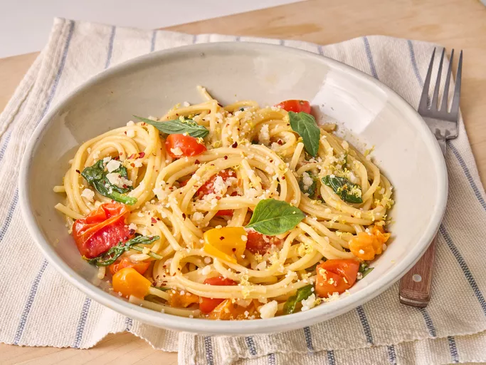

One-Pan Pasta Recipe

Description
Spaghetti cooks in the same pan as cherry tomatoes, greens, garlic, and enough Parmesan to make a light creamy sauce.
Ingredients
- 4 cups water
- 16 ounces cherry tomatoes, halved
- 4 cloves garlic, minced
- 3 tablespoons olive oil
- 2 teaspoons kosher salt
- 8 ounces spaghetti
- 2 teaspoons lemon zest
- 1/4 teaspoon crushed red pepper
- 4 cups greens, such as arugula, baby spinach, and/or Swiss chard
- 1/2 cup grated Parmesan cheese, plus more for garnish
- basil leaves, for garnish
Steps
- Bring water to a boil in a small saucepan or kettle.
- Place tomatoes, garlic, oil, and salt in a large deep skillet or Dutch oven. Place spaghetti noodles on top and add lemon zest. Place skillet over medium heat.
- Add just enough boiling water to cover the pasta and bring to a boil. Cover, and cook about 6 minutes, stirring halfway through. Uncover, and cook, stirring occasionally, 4 to 5 minutes.
- Add red pepper, greens, and Parmesan and continue to cook, stirring occasionally, until mixture has thickened and pasta is cooked according to desired consistency. Season with salt and additional crushed red pepper if desired. Serve with fresh basil and grated Parmesan.
Home